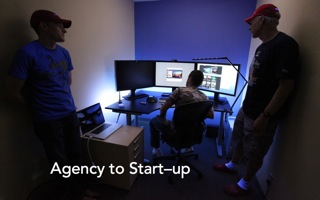
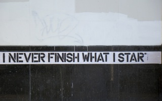
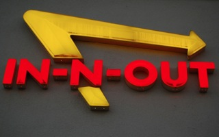
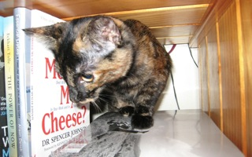
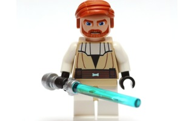
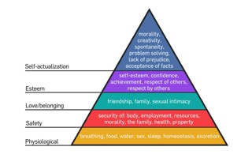
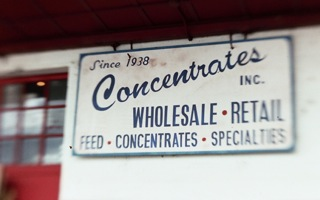

Agency to Start–up
Refresh Edinburgh 11th February 2011
Personal Introduction
- Graduated CS degree in 2005
- Previously a developer at Mercurytide, and then at Line.
- Front-end build, backend everything.
- Now one of two co–founder & the developer at Bloop.
Ibuprofen
{kind=link}
- Migraine: Ibuprofen.
Talk introduction
Mr. Cool at SmugMug by Robert Scoble
- Title given to me by Andy, after failing to come up with something clever.
- It’s about:
- Things I’ve learnt;
- Things I’ve come to accept;
- The differences between Agency & Startup;
- What Agencies could learn from Startups;
- It may be biased: I work at a Startup.
- Maybe a bit of a sham, because Bloop hasn’t succeeded yet.
Slow down
- I have a tendency to rattle through slides, so this is a reminder to myself.
Scaling
Stata Center by Frank Gehry by Laughing Squid
- It is my opinion is that Agencies don’t scale well.
- That’s OK, neither do architects, or lawyers offices.
- For the most part, every job is unique; especially design work.
- Money earned limited by number & size of projects.
- Number & size of projects limited by number & ability of employees.
- Fred Brooke’s Mythical Man Month.
- Big companies sell products:
- Microsoft ~90K;
- Dell ~105K;
- Apple ~30K + 15K in retail;
- Agency.com: 500 employees;
- Gehry Partners: (Stata Center at MIT) 120 employees;
- Foster + Partners ~1K.
Build once
Never finished
- Many times I’ve wished Bloop was finished: I’d like to start the next project.
- Bloop will never be finished.
- Feedback from users, investors, mentors.
- No two people ever want exactly the same thing (compromise is obviously the key).
- Agencies are contracted to complete a project, and paid on completion.
- Startups are rewarded for execution of an idea, and risk on exit.
- Websites are never finished either.
- It ages, and is rebuilt by the same, or another agency in a few years time.
Quick & easy > perfect
- It’s better now than later. Perfection can wait until the solution is proven.
- Innovation is the key: Minimum Viable Product: test a business hypothesis.
- Certainly guilty of over engineering when I started at Bloop.
- 3–5 days to build a handful of templates is too much.
- Somewhat similar to TDD: Add functionality; Make it work; Refactor duplication.
Change is inevitable
Who Moved my Cheese by Nicki-G
- Manage change;
- Discuss changes: in person, or on the phone;
- Email/IM/Basecamp doesn’t work.
- Make small changes regularly;
- Explain the why of changes to users.
- A lot of the problems we’ve had with Bloop are making large changes, or miscommunication: of course we’re still learning.
Buy > build
Night, Fog, Star trail by Fish@Taipei
- Time is of the essence.
- If you can buy something for less than it costs to build it: buy it.
- But EVALUATE.
- Things not to build: anything to do with email, shared to–do lists or project management, server monitoring, any kind of framework.
- Certainly true for hosted services, we pay for:
- GitHub, Postmark, PivotalTracker.
- The corollary is:
Free > buy
- If it’s free, don’t pay for it.
- BUT AGAIN, EVALUATE:
- For example, would I use the “free” Android over the “premium iPhone”.
The tools you know
- Use the tools you know. Don’t be attracted to exotic tools (yet).
- Bloop uses: jQuery, Python, Django, PostgreSQL, Ubuntu, memcached.
- All things I knew before I started working on Bloop.
- We both use our own Macs: we are (and most Mac users I know) are way more productive on their Mac than they would be on a Windows 7 Dell.
- Bloop doesn’t use:
- mongodb: we don’t have a huge need for non-relational storage (yet). Point also helped by the Foursquare, 11-hour outage the week we discussed it.
- Node.js: I’ve never managed to keep it up, it’s fun to write JavaScript for the server, and to do real–time stuff, but we don’t need real–time (yet).
Side projects
- Side projects give you an opportunity to love what you do as a job, and more importantly, practice the craft.
- Side projects also useful for when I don’t know something.
- Try these things out on side–projects:
- Bloop’s OAuth client was ironed out on a side–project;
- Bloop’s OAuth provider is being ironed out on a side project.
Premature optimisation
Tony Hoare by adewale_oshineye
- Tony Hoare—Quicksort
- “Premature optimisation is the root of all evil”
- Build what you need, when you need it:
- Lots of odd 503 (Service Unavailable)
- Sending email example:
- Use Django’s built–in send_mail: sends emails in the request–response cycle;
- Switched to Postmark (simple API to send emails): calls an API in the request–response cycle;
- Added RabbitMQ & celery: creates a job to send emails, a worker sends emails “some time soon”.
- RabbitMQ, celery: “exotic” things we had to add.
Quality; speed; cost
Lamborghini Countach by aldenjewell
- Start–ups: quality & speed
- Start-ups have a huge amount of potential value: give it to good people to reward them for risk.
- Agencies: a careful balancing act, usually picks speed & cost.
- Hard and fast deadlines; never enough money.
Agency work / sit at a desk
- Joining a start–up has seen my job transform from being just a developer:
- Work 9–6; Lunch at 1.
- Sometimes working late.
- Work for some great clients: either big names, or interesting work, sometimes both at once.
Always on call
London Ambulance Service - Mercedes Sprinter (LJ53 BVG) on call by policeblue999
- Developer: everything else I used to do too.
- Architect: as much as I can, I have to make sure that the plan is feasible;
- QA: that what we’re putting out works.
- Sys–admin/DBA:
- I have to make sure the servers are always up;
- That we have capacity;
- That we don’t loose data.
Mentor
High-Key Jedi Master by pasukaru76
- I’m lucky to have found some great mentors. Friends I’ve made through Refresh Edinburgh, at Line, Mercurytide, and friends of friends.
- Email them
- Meet them for lunch
- Go for a few drinks
- Stay up until 2 in the morning drinking whisky on a school night
Working at home
- More obvious than a desire: Sam & I live in different cities, so we see no reason to rent an office.
- Obviously we work from home, coffee shops (Black Medicine, Starbucks), and bars (Koko, Holyrood 9A).
- I usually work 10–6
- Skype with Sam at ~10/11.
- Run 2 or 3 days/week at about 1pm.
- Shower & make lunch on return.
- Stop working when Ro get’s home.
- Sometimes keep working late.
- Sam Brown’s Blog
- Reduce distractions.
- SEPARATE WORK & HOME: Sam puts his shoes on to work, takes them off to relax.
- MAKE SURE YOU GET OUT: My wife once went to a conference …
- DO EVERYTHING SOCIALLY: Twitter; Spotify; Dribbble.
Needs
{kind=link}
- Basic motivation:
- Maslow’s Pyramid of Needs
- Start at bottom and work up;
- I’m assuming that we’re mostly all at the top
- If there was a threat to our security of employment, we couldn’t be as creative.
Goals
Eddie Johnson’s Goal by kidgifter
- Have goals:
- Goals written down are more likely to be achieved;
- Shared goals are even more likely to be achieved.
- Use GTD to track goals, as well as Tasks.
Motivation
- Daniel Pink – Drive
- Boring jobs: anything formulaic: copy–pasting content from Word docs.
- Extrinsic (if–then) rewards are not good for heuristic (creative) work:
- That is rewards offered on completion
- Narrow’s thinking, focusing on the prise.
- Pomodoro: small time rewards often: Dribbble; Ffffound; Twitter
Intrinsic reward
- Creativity: Intrinsic (now that) rewards however are good for creative work:
- Non–cash rewards: praise & feedback.
- Provide regular useful feedback rather than attempt to control.
- The most rewarding type of work:
- Flow (the zone): Requires high level of skill & high level of challenge.
- Autonomy, Mastery & Purpose.
- Couple with intrinsic rewards, and you have a great job.
- “Choose your second favourite hobby as your job”
Life > business
- Make sure you do things outside of “work”.
- Find a hobby: have a beer, dress up as Darth Vader; look for funny pictures of people dressed up as Darth Vader.
- You are more than the company you work at.
- Run; Twitter; read; cinema; play computer games;
- Refresh, TechMeetup, ScotRUG, Edinburgh Python.
Thanks
- ORGANISERS: thanks to Andy & Rory.
- HOSTS: Storm ID.
- All photos are from Flickr, either CC, or my own.
- Photo Credits & Slides will be online sometime soon.
- Questions at the pub.